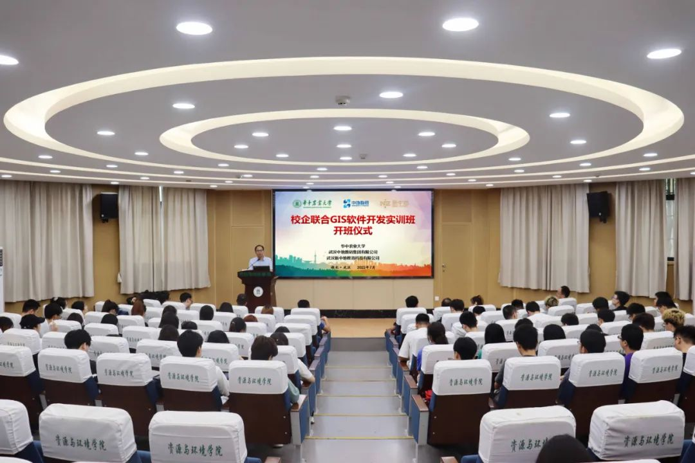

华中农业大学资源与环境学院、中地数码集团新中地教育2202期校企联合GIS开发实战夏令营开班典礼圆满举行

（开班典礼现场）
7月6日上午8点30分，由华中农业大学资源与环境学院与中地数码集团、新中地教育联合主办的2022年GIS开发实战夏令营开班典礼，在华中农业大学资环学院报告厅正式举行。
华中农业大学资源与环境学院党委副书记熊海林、华中农业大学资源与环境学院教授王天巍、华中农业大学资源与环境学院副教授张建、华中农业大学资源与环境学院讲师郭龙、华中农业大学资源与环境学院讲师褚琳，中地数码集团新中地教育技术总监徐国华、新中地教育高校合作部经理艾伟、新中地教育研发部经理方胡朝、新中地教育高校合作部渠道经理谢志成、新中地教育高级讲师付栋、新中地教育推广部主管余婉琪以及华中农业大学资源与环境学院近百名学生等参加了开班仪式。开班仪式由新中地教育高校合作部经理艾伟主持。